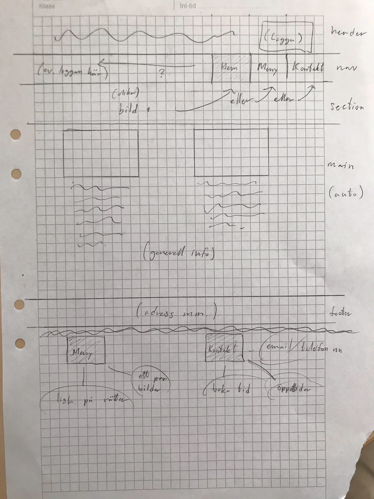

Dokumentation projekt Vt
1. Idébeskrivning
Jag tänker då alltså göra en hemsida till en restaurang som specialicerar sig på att servera mat som på ett
eller annat sätt innehåller nötter. Målgruppen är diverse nötentusiaster eller bara nyfikna människor över lag.
Tänker att det också ska finnas ett par take-away alternativ för nötallergiker.
Meny Lista: (exempel)
- Farfars nötter
- Husets nötcreme dessert
- Gamla nötter förrätt
- Spräckta nötter
- Perplex pecannötspaj
- Jordnära jordnöts pizza
- Inga nötter (nötfri)
- George Clooney målet (nötfri)
- Stora/lilla nötskålen
2. Planering
2.1 Handskiss

2.2 Schema
Lektion 1: planera, skissa, eventuellt börja koda
Lektion 2: börja designa logga + andra grafiska element, bilder, fortsätta skriva hemsidan
Lektion 3: försöka bli klar med minst två av dokumenten
Lektion 4: bli klar med tredje dokumentet, finalisera + finputs
| Vecka | På lektionen | Utanför lektionen |
| 47 |
|
|
| 48 |
|
|
| 49 |
|
|
| 50 |
|
|
3. Dokumentation
Lektion vecka 47
Idag har jag planerat arbetet, skissat upp min hemsida och börjat koda det mest grundläggande. Index-dokumentet
har fått alla grundläggande aspekter som behövs enligt skissen, och i mitt stylesheet har jag skapat en enkel
grid-layout och börjat koda lite på nav:en.
Lektion vecka 48
Idag testade jag att lägga en bild som bakgrund i headern, samt designade och lade in en logga. Jag finaliserade loggan i
photoshop, men jag var tvungen att göra en del förarbete i ett webbprogram (detta för att photoshop bland annat
inte hade fonten jag ville använda). Jag gjorde misstaget att skapa en ny fil med vit bakgrund istället för en
transparent, så jag behövde göra om det i en ny fil för att det skulle bli rätt. På grund av allt detta syns inte
många av justeringarna jag gjort. Ifall det behövs kan jag i så fall komplettera detta moment vid ett annat tillfälle.
Jag valde också ett passande färgskema till hemsidan, samt fått en primitiv version av navigeringsfältet att fungera.
Lektion vecka 49
Idag lade jag till olika bilder i mellansektionen samt började testa och ordna med lite olika divvar i main-taggen.
Bilderna tog jag från unsplash och komprimerade sedan i photoshop. Navigationsbaren är nu fullt fungerande och har
länkar till de två andra html-dokumenten. Några saker behövde debuggas, t.ex. att jag var tvungen att göra om
vissa id till klasser för att stylingen skulle applicera på alla html-dokument. Jag har även bestämt mig för en
layout för hur korten som ska innehålla text och bilder i main ska se ut.
Lektion vecka 50
Idag blev jag i princip klar med hemsidan, den sista fliken (meny) blev färdig, komplett med figurer och menylista.
För att sammanfatta dagens arbete var det mest finputs här och där, upptäckte några små problem som krävde work-arounds.
Jag validerade även min kod (både html och css), och såg till att bl.a. ändra dokumentspråket till 'zxx' så att inte
lorem-texten skulle sabotera inläsningen av hemsidan.
4. Testning
Testat i microsoft edge utöver google chrome. Allt verkade funka som det skulle, hemsidan anpassar sig bra efter
dimensionerna. Valideringen gick också bättre än väntat (gjordes vid förra lektionstillfället, resultat ovan ^).
contrastchecker.com tycker att rubriken i sectionen under nav-baren på menysidan kontrasterar lite för dåligt mot
bakgrunden. För att motverka detta sänkte jag ljusstyrkan på bilden en aning i photoshop, vilket inte var särskilt svårt.
5. Utvärdering
Jag tycker att arbetet har flutit på ganska bra. Jag har har hållt min tidsplan, och till och med gjort mer än planerat
vissa lektioner. Något jag insåg mitt i arbetet var att det var väldigt jobbigt att hålla reda på alla id och klasser
jag skapat. Eftersom att detta är det största arbetet hittills så hade jag ju inte behövt jobba med css på samma skala
förut. Jag fick ett tips av en klasskamrat att jag borde ordna css-dokumentet genom att dela av det med hjälp av kommentarer,
så att taggarna låg sorterade efter vilka objekt och dokument de stylade. Detta är definitivt något jag kommer ta med mig
in i framtida projekt. En annan sak som jag kommer ta med mig i framtiden är att hämta inspiration från nätet. Eftersom att
jag aldrig skapat en hemsida på den här skalan förut så tänkte jag i början av projektet att jag antagligen borde kolla på hur
det kan se ut när det görs proffessionellt. Detta visade sig vara en väldigt bra idé, då det öppnade mitt sinne för nya
tillvägagångssätt och layouts som jag kunde hämta inspiration från. För att förbättra själva hemsidan skulle jag kunnat